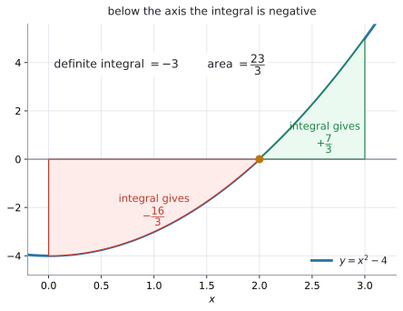
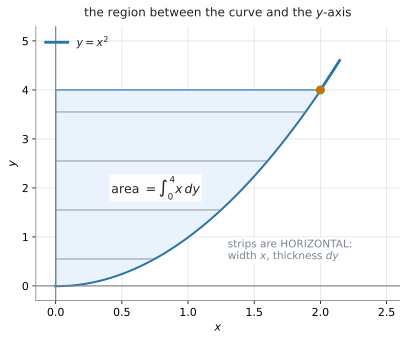

AHL 5.12a — Area of a region enclosed by a curve and the \(x\) or \(y\)-axes（曲線と軸で囲まれた面積）
- 面積と定積分の値が別のものだと分かる。
- 曲線が \(x\) 軸の下に入るとき、\(\displaystyle\int_{a}^{b}|y|\,dx\) で面積を求められる。
- \(y = 0\) になる \(x\) で区間を区切り、絶対値をとってから足せる。
- 曲線と \(y\) 軸ではさまれた面積を、\(\displaystyle\int_{a}^{b}|x|\,dy\) で求められる。
- そのために、\(y = f(x)\) を \(x = g(y)\) に直し、端も \(y\) の値に直せる。
- 計算の前に、積分の式を書ける。
The idea
1. 面積は \(\displaystyle\int|y|\,dx\) です
面積を求める式は、SL のときとほとんど同じです。違うのは modulus（絶対値）だけです。
\[ A = \int_{a}^{b} |y|\,dx \tag{1}\]
公式集の \(5.12\) の欄にあります。配られるので、覚える必要はありません。 見出しは「Area of region enclosed by a curve and \(x\) or \(y\)-axes」で、\(y\) 軸のための式（第4節）と \(2\) つ並んでいます。
SL 5.5 では、SL の公式集にこう書かれていました。
Area of region enclosed by a curve \(y = f(x)\) and the \(x\)-axis, where \(f(x) > 0\)
そこでは曲線が \(x\) 軸より上にある場合だけを扱いました。HL の公式集には、この欄そのものがありません。 面積の式は \(\displaystyle\int\lvert y \rvert\,dx\) だけで、\(f(x) > 0\) という条件はどこにも出てきません。シラバスの Guidance 欄も、一言だけ書いています。
Including negative integrals.
つまり、このページで増えるのは次の \(2\) つです。
回転体の体積は AHL 5.12b で扱います。
曲線がずっと \(x\) 軸より上にあるなら、\(|y| = y\) なので SL とまったく同じ式になります。
\[ y > 0 \ \text{のとき} \qquad A = \int_{a}^{b} y\,dx \]
絶対値が効いてくるのは、軸の下に入るときだけです。ですから、まず図をかいて、軸を横切るかどうかを見ることから始めます。
2. 軸の下に入ると、定積分（definite integral）は負になります
\(y = x^{2} - 4\) を、\(0 \leq x \leq 3\) で考えます。

図 1 がその図です。\(x = 2\) で \(x\) 軸を横切っています。
まず、そのまま定積分（definite integral）を計算します。
\[ \int_{0}^{3}\left(x^{2}-4\right)dx = \left[\frac{x^{3}}{3} - 4x\right]_{0}^{3} = 9 - 12 = -3 \]
負の値が出ました。 面積が負になることはありませんから、これは面積ではありません。
手順は \(3\) つです
- \(y = 0\) を解く（区切る \(x\) を出す）
- 区間ごとに定積分を計算する
- 絶対値をとってから足す
\(y = x^{2} - 4 = 0\) より \(x = 2\) です（\(0 \leq x \leq 3\) の中にあります）。
\[ \int_{0}^{2}\left(x^{2}-4\right)dx = \left(\frac{8}{3} - 8\right) - 0 = -\frac{16}{3} \]
\[ \int_{2}^{3}\left(x^{2}-4\right)dx = (9 - 12) - \left(\frac{8}{3} - 8\right) = \frac{7}{3} \]
\[ A = \left|-\frac{16}{3}\right| + \left|\frac{7}{3}\right| = \frac{16}{3} + \frac{7}{3} = \frac{23}{3} \]
定積分は \(-3\)、面積は \(\dfrac{23}{3} = 7.67\) です。 まったく違う数です。
AHL 5.13 の displacement（変位）と distance travelled（進んだ道のり）が、これとまったく同じ仕組みです。あちらは \(\displaystyle\int v\,dt\) と \(\displaystyle\int |v|\,dt\)、こちらは \(\displaystyle\int y\,dx\) と \(\displaystyle\int |y|\,dx\) です。
電卓なら、絶対値を付けて一度に出せます
区切らずに、\(|y|\) をそのまま積分することもできます。画面に出るテンプレートに、見たままの形で入れてください。
menu → Calculus → Integral\[ \int_{0}^{3} \left| x^{2} - 4 \right| dx \]
\(7.6667\) と出ます（GDC 第2節）。
3. 「面積」と「定積分の値」は、別のことばです
面積は area、定積分の値は the value of the definite integral です。試験の問題文は英語なので、この \(2\) 語を読み分けられるかどうかで答えが変わります。
問題文が何を聞いているかで、答えが変わります。
| 問題文 | 求めるもの | \(y = x^{2}-4\)、\(0 \leq x \leq 3\) なら |
|---|---|---|
Find と書かれ、\(\displaystyle\int_{0}^{3} y\,dx\) が示されている |
定積分の値。負にもなる | \(-3\) |
Find the area of the region |
面積。負にならない | \(\dfrac{23}{3} = 7.67\) |
問題文の area という語に注意してください。
4. \(y\) 軸ではさまれた面積
公式集の \(2\) つ目は、\(x\) と \(y\) が入れかわった形です。
\[ A = \int_{a}^{b} |x|\,dy \tag{2}\]

図 2 を見てください。\(y = x^{2}\) と \(y\) 軸ではさまれた、\(y = 0\) から \(y = 4\) までの部分です。
定積分は、細長い短ざく（細長い長方形）を足し合わせたものです（SL 5.5）。その短ざくが、横向きになります。
- \(x\) 軸のとき … たて \(y\)、よこ \(dx\) の縦の短ざく
- \(y\) 軸のとき … よこ \(x\)、たて \(dy\) の横の短ざく
式を \(x = g(y)\) に直します
\(\displaystyle\int x\,dy\) を計算するには、\(x\) を \(y\) の式で書かなければなりません。
\[ y = x^{2} \quad \Longrightarrow \quad x = \sqrt{y} \qquad (x \geq 0) \]
\(2\) 乗のように偶数乗の式は、\(x\) について解くと \(2\) つになります。 \(y = x^{2}\) なら \(x = \pm\sqrt{y}\) です。どちらを使うかは、図のどちら側の部分かで決まります。図 2 は \(x \geq 0\) の側なので \(x = \sqrt{y}\) です。
\(3\) 乗のように奇数乗なら、解は \(1\) つだけです。
| もとの式 | \(x = g(y)\) に直すと |
|---|---|
| \(y = x^{2}\)（\(x \geq 0\)） | \(x = \sqrt{y} = y^{\frac{1}{2}}\) |
| \(y = x^{3}\) | \(x = \sqrt[3]{y} = y^{\frac{1}{3}}\) |
| \(y = 2x\) | \(x = \dfrac{y}{2}\) |
| \(y = e^{x}\) | \(x = \ln y\) |
\(y\) 軸の左側（\(x < 0\)）の部分なら、\(x\) が負になります。 そのときに modulus が効いてきます。
端（limits）も \(y\) の値に直します
積分の端は、英語では limits といいます。下が lower limit（下端）、上が upper limit（上端）です。
積分の変数が \(y\) になったので、端も \(y\) の値でなければなりません。
問題文が \(y\) の範囲で書いてくれていれば、そのまま使えます。\(x\) の範囲で書かれていたら、直します。
\[ x = 0 \ \Rightarrow \ y = 0, \qquad x = 2 \ \Rightarrow \ y = 4 \]
\[ A = \int_{0}^{4} \sqrt{y}\,dy = \left[\frac{2}{3}y^{\frac{3}{2}}\right]_{0}^{4} = \frac{2}{3}(8) = \frac{16}{3} \]
検算。 \(0 \leq x \leq 2\) の長方形（よこ \(2\)、たて \(4\)）の面積は \(8\) です。曲線の下の面積は \(\displaystyle\int_{0}^{2}x^{2}\,dx = \dfrac{8}{3}\)。残りが \(8 - \dfrac{8}{3} = \dfrac{16}{3}\) ✓
5. どちらの式を使うか
問題文が「どの軸ではさまれているか」を言っています。
| 問題文 | 使う式 | 端（limits）は |
|---|---|---|
the curve and the x-axis |
\(\displaystyle\int \lvert y \rvert\,dx\) | \(x\) の値 |
the curve and the y-axis |
\(\displaystyle\int \lvert x \rvert\,dy\) | \(y\) の値 |
\(y\) 軸と言われたら、式を \(x = g(y)\) に直すという一手間が増えます。増えるのは、その一手間です。
Why it works
ここでは、公式集の \(2\) つの式がなぜその形なのかを確かめます。
なぜ絶対値を付けると面積になるのか
定積分は、細長い短ざくの面積を足し合わせたものでした（SL 5.5）。\(1\) 枚の短ざくは、たて \(y\)、よこ \(dx\) の長方形です。
曲線が \(x\) 軸より下にあるとき、\(y\) は負です。ですから \(y\,dx\) も負になり、足すと引かれてしまいます。
図形としての高さは、\(y\) が \(-2\) なら \(2\) です。つまり \(|y|\) です。ですから
\[ \text{短ざくの面積} = |y| \times dx \]
これを足し合わせたものが 式 1 です。
図 1 で言うと、\(0 \leq x \leq 2\) の部分を軸の上に折り返すわけです。折り返せば、その部分が \(+\dfrac{16}{3}\) の面積として数えられます。
なぜ \(\displaystyle\int x\,dy\) が横向きの面積なのか
短ざくの向きを \(90^{\circ}\) 回しただけです。
- \(x\) 軸のとき … たて \(y\)、よこ \(dx\) の縦の短ざく
- \(y\) 軸のとき … よこ \(x\)、たて \(dy\) の横の短ざく
図 2 に引いてある横線が、その短ざくです。\(1\) 枚の面積は \(x \times dy\) で、これを \(y = a\) から \(y = b\) まで足し合わせると 式 2 になります。
\(x\) が負の側（\(y\) 軸の左）にある部分では、\(x\) が負になります。 だから、こちらの式にも絶対値が付いています。
\(2\) つの面積を足すと長方形になります
図 2 の面積は \(\dfrac{16}{3}\) でした。いっぽう、同じ曲線の下の面積は
\[ \int_{0}^{2}x^{2}\,dx = \left[\frac{x^{3}}{3}\right]_{0}^{2} = \frac{8}{3} \]
です。この \(2\) つを足すと
\[ \frac{16}{3} + \frac{8}{3} = 8 \]
で、よこ \(2\)・たて \(4\) の長方形の面積になります。曲線が長方形を \(2\) つに切り分けているわけです。
\(y\) 軸の面積を出したあとは、この足し算で検算できます。
Worked examples
問題文は英語です。意味が理解できなかったら、問題文の下の「日本語訳」を開いてください。解説は日本語です。
例題 1 Let \(y = x^{2} - 4\).
(a) Find \(\displaystyle\int_{0}^{3}\left(x^{2}-4\right)dx\).
(b) Find the area of the region enclosed by the curve and the \(x\)-axis for \(0 \leq x \leq 3\).
(c) Explain why your answers to parts (a) and (b) are different.
日本語訳
\(y = x^{2} - 4\) とします。
the region enclosed by は「〜で囲まれた領域」という意味です。
(a) \(\displaystyle\int_{0}^{3}\left(x^{2}-4\right)dx\) を求めなさい。
(b) \(0 \leq x \leq 3\) で、この曲線と \(x\) 軸で囲まれた領域の面積を求めなさい。
(c) (a) と (b) の答えが違う理由を説明しなさい。
(a) そのまま積分します。
\[ \int_{0}^{3}\left(x^{2}-4\right)dx = \left[\frac{x^{3}}{3} - 4x\right]_{0}^{3} = 9 - 12 = -3 \]
(b) area と書かれているので、絶対値が要ります（式 1）。まず \(y = 0\) を解いて区切ります（第2節）。
\[ x^{2} - 4 = 0 \quad \Longrightarrow \quad x = 2 \qquad (0 \leq x \leq 3 \ \text{の中にあります}) \]
\[ \int_{0}^{2}\left(x^{2}-4\right)dx = \frac{8}{3} - 8 = -\frac{16}{3} \]
\[ \int_{2}^{3}\left(x^{2}-4\right)dx = -3 - \left(-\frac{16}{3}\right) = \frac{7}{3} \]
（\(-3\) は (a) で出した \(\displaystyle\int_{0}^{3}\) の値です。\(\displaystyle\int_{0}^{3} = \displaystyle\int_{0}^{2} + \displaystyle\int_{2}^{3}\) を使いました。）
絶対値をとってから足します。
\[ A = \frac{16}{3} + \frac{7}{3} = \frac{23}{3} = 7.67 \]
(c) 曲線が \(x\) 軸を横切っているからです。
試験ではこう書く
The curve is below the \(x\)-axis for \(0 \leq x < 2\), so that part of the integral is negative and is subtracted. The definite integral therefore gives \(-3\), while the area counts that part as positive and gives \(\dfrac{23}{3}\).
（\(0 \leq x < 2\) では曲線が \(x\) 軸の下にあるので、その部分の積分は負になり、引かれてしまう。定積分は \(-3\) になるが、面積はその部分を正として数えるので \(\dfrac{23}{3}\) になる、という意味です。）
検算。 電卓で \(\displaystyle\int_{0}^{3}\left|x^{2}-4\right|dx\) を計算すると \(7.6667\) ✓ \(\dfrac{23}{3} = 7.6667\) です（GDC 第2節）。
(a) \[ \int_{0}^{3}\left(x^{2}-4\right)dx = \left[\frac{x^{3}}{3}-4x\right]_{0}^{3} = 9 - 12 = -3 \]
(b) \[ x^{2}-4 = 0 \quad \Longrightarrow \quad x = 2 \] \[ \int_{0}^{2}\left(x^{2}-4\right)dx = -\frac{16}{3}, \qquad \int_{2}^{3}\left(x^{2}-4\right)dx = \frac{7}{3} \] \[ A = \frac{16}{3} + \frac{7}{3} = \frac{23}{3} = 7.67 \]
(c) The curve lies below the \(x\)-axis for \(0 \leq x < 2\), so that part of the integral is negative. The area counts it as positive instead.
例題 2 Consider the curve \(y = \sin x\) for \(0 \leq x \leq 2\pi\).
(a) Show that \(\displaystyle\int_{0}^{2\pi}\sin x\,dx = 0\).
(b) Find the area of the region enclosed by the curve and the \(x\)-axis for \(0 \leq x \leq 2\pi\).
日本語訳
\(0 \leq x \leq 2\pi\) における曲線 \(y = \sin x\) を考えます。
Show that は「与えられた答えに向かって、途中を全部書く」という意味です。
(a) \(\displaystyle\int_{0}^{2\pi}\sin x\,dx = 0\) であることを示しなさい。
(b) \(0 \leq x \leq 2\pi\) で、この曲線と \(x\) 軸で囲まれた領域の面積を求めなさい。
(a) Show that なので、途中をすべて書きます。\(\sin\) の積分は \(-\cos\) です（AHL 5.11a）。
\[ \int_{0}^{2\pi}\sin x\,dx = \bigl[-\cos x\bigr]_{0}^{2\pi} = -\cos 2\pi + \cos 0 = -1 + 1 = 0 \]
(b) \(\sin x = 0\) になるのは、\(0 \leq x \leq 2\pi\) の中では \(x = 0\)、\(\pi\)、\(2\pi\) です。区切るのは \(x = \pi\) です。
\[ \int_{0}^{\pi}\sin x\,dx = \bigl[-\cos x\bigr]_{0}^{\pi} = 1 + 1 = 2 \]
\[ \int_{\pi}^{2\pi}\sin x\,dx = \bigl[-\cos x\bigr]_{\pi}^{2\pi} = -1 - 1 = -2 \]
\[ A = |2| + |-2| = 4 \]
定積分は \(0\)、面積は \(4\) です。 上下がちょうど打ち消し合っています。
検算。 電卓で \(\displaystyle\int_{0}^{2\pi}\left|\sin x\right|dx\) を計算すると \(4\) ✓ Radian にしてから計算してください（AHL 5.11a）。
(a) \[ \int_{0}^{2\pi}\sin x\,dx = \bigl[-\cos x\bigr]_{0}^{2\pi} = -1 - (-1) = 0 \]
(b) \[ \sin x = 0 \quad \Longrightarrow \quad x = \pi \qquad (0 < x < 2\pi) \] \[ \int_{0}^{\pi}\sin x\,dx = 2, \qquad \int_{\pi}^{2\pi}\sin x\,dx = -2 \] \[ A = 2 + 2 = 4 \]
例題 3 The curve \(y = x^{2}\) is drawn for \(x \geq 0\).
(a) Write \(x\) in terms of \(y\).
(b) Find the area of the region enclosed by the curve, the \(y\)-axis and the line \(y = 4\).
日本語訳
\(x \geq 0\) について、曲線 \(y = x^{2}\) が描かれています。
in terms of は「〜を使って」という意味です。
(a) \(x\) を \(y\) を使って表しなさい。
(b) この曲線、\(y\) 軸、および直線 \(y = 4\) で囲まれた領域の面積を求めなさい。
(a) \(x\) について解きます（表 2）。\(x \geq 0\) と書かれているので、正のほうだけです。
\[ y = x^{2} \quad \Longrightarrow \quad x = \sqrt{y} = y^{\frac{1}{2}} \]
(b) the y-axis とあるので、\(\displaystyle\int \lvert x \rvert\,dy\) です（式 2）。この領域では \(x \geq 0\) なので \(|x| = x\) です。
端は \(y\) の値です（第4節）。領域は \(y = 0\) から \(y = 4\) までです。
\[ A = \int_{0}^{4} y^{\frac{1}{2}}\,dy = \left[\frac{2}{3}y^{\frac{3}{2}}\right]_{0}^{4} \]
\(4^{\frac{3}{2}} = 8\) なので
\[ A = \frac{2}{3}(8) - 0 = \frac{16}{3} = 5.33 \]
検算。 よこ \(2\)・たて \(4\) の長方形の面積が \(8\)、曲線の下の面積が \(\displaystyle\int_{0}^{2}x^{2}\,dx = \dfrac{8}{3}\)。残りは \(8 - \dfrac{8}{3} = \dfrac{16}{3}\) ✓（Why it works）
(a) \[ x = \sqrt{y} \qquad (x \geq 0) \]
(b) \[ A = \int_{0}^{4} \sqrt{y}\,dy = \left[\frac{2}{3}y^{\frac{3}{2}}\right]_{0}^{4} = \frac{16}{3} = 5.33 \]
例題 4 Let \(y = x^{3} - 4x\).
(a) Find the values of \(x\) for which the curve meets the \(x\)-axis.
(b) Find the area of the region enclosed by the curve and the \(x\)-axis for \(-1 \leq x \leq 2\).
日本語訳
\(y = x^{3} - 4x\) とします。
meets the x-axis は「\(x\) 軸と交わる」という意味です。
(a) この曲線が \(x\) 軸と交わる \(x\) の値を求めなさい。
(b) \(-1 \leq x \leq 2\) で、この曲線と \(x\) 軸で囲まれた領域の面積を求めなさい。
(a) \(y = 0\) を解きます。因数分解できます。
\[ x^{3} - 4x = x\left(x^{2}-4\right) = x(x-2)(x+2) = 0 \]
\[ x = -2, \qquad x = 0, \qquad x = 2 \]
(b) \(-1 \leq x \leq 2\) の中にあるのは \(x = 0\) だけです（\(x = -2\) は範囲の外、\(x = 2\) は端）。ですから、区切るのは \(x = 0\) です。
\[ \int_{-1}^{0}\left(x^{3}-4x\right)dx = \left[\frac{x^{4}}{4} - 2x^{2}\right]_{-1}^{0} = 0 - \left(\frac{1}{4} - 2\right) = \frac{7}{4} \]
\[ \int_{0}^{2}\left(x^{3}-4x\right)dx = (4 - 8) - 0 = -4 \]
\[ A = \frac{7}{4} + 4 = \frac{23}{4} = 5.75 \]
検算。 電卓で \(\displaystyle\int_{-1}^{2}\left|x^{3}-4x\right|dx\) を計算すると \(5.75\) ✓ そのまま積分すると \(-\dfrac{9}{4} = -2.25\) で、面積とは違います。
(a) \[ x(x-2)(x+2) = 0 \quad \Longrightarrow \quad x = -2,\ 0,\ 2 \]
(b) \[ \int_{-1}^{0}\left(x^{3}-4x\right)dx = \frac{7}{4}, \qquad \int_{0}^{2}\left(x^{3}-4x\right)dx = -4 \] \[ A = \frac{7}{4} + 4 = \frac{23}{4} = 5.75 \]
Common errors
誤り：\(\left|\displaystyle\int_{0}^{3}\left(x^{2}-4\right)dx\right| = |-3| = 3\) と書く。
これは打ち消し合ったあとの値の絶対値です。打ち消しは、絶対値をとる前に起きています。
正しくは：区間ごとに積分してから、それぞれの絶対値を足します。\(\dfrac{16}{3} + \dfrac{7}{3} = \dfrac{23}{3}\) です。
\(y = \sin x\) の例（例 2）なら、この誤りは \(0\) という答えを出してしまいます。
誤り：\(y = x^{3}-4x\) で、\(-1 \leq x \leq 2\) なのに \(x = -2\) でも区切ろうとする。
正しくは：\(y = 0\) の解のうち、その区間の中にあるものだけで区切ります（例 4）。
範囲を先に紙に書いてから、解を照らし合わせてください。
誤り：\(\displaystyle\int_{0}^{4} x^{2}\,dy\) と書く（\(x\) が残っている）。
積分の変数が \(y\) なら、中身も \(y\) の式でなければなりません。
正しくは：\(x = \sqrt{y}\) に直してから、\(\displaystyle\int_{0}^{4}\sqrt{y}\,dy\) とします（第4節）。
誤り：\(y = x^{2}\)、\(0 \leq x \leq 2\) の \(y\) 軸側の面積を \(\displaystyle\int_{0}^{2}\sqrt{y}\,dy\) と書く。
\(x = 2\) に対応するのは \(y = 4\) です。
正しくは：\(\displaystyle\int_{0}^{4}\sqrt{y}\,dy\) です（第4節）。式を \(y\) に直したら、端も \(y\) に直します。
誤り：\(y = x^{2}-4\) が軸を横切ることに気づかないまま、そのまま積分する。
正しくは：先に \(y = 0\) を解くか、電卓でグラフを見てください（GDC 第1節）。横切っていなければ、絶対値は要りません。
Show that なのに、電卓の値だけを書く
誤り：\(\displaystyle\int_{0}^{2\pi}\sin x\,dx = 0\) を示せ、と言われて「電卓で \(0\) でした」と書く。
正しくは：\(\bigl[-\cos x\bigr]_{0}^{2\pi} = -1 + 1 = 0\) と、原始関数と代入を書きます（AHL 5.11a）。
Using your GDC (TI-Nspire CX II)
グラフを見てから計算するのが、この項目のいちばん確実なやり方です。
1. グラフで、軸を横切るか見る
- \(f1(x) = x^{2} - 4\)
menu → Analyze Graph → Zero
横切っていれば絶対値が要り、横切っていなければ要りません。 ここを見ずに始めると、Common errors の \(1\) つ目になります。
menu → Analyze Graph → Integral を使うと、塗られた面積と値が画面に出ます（SL 5.5）。\(x\) 軸の下の部分は、負の値として表示されます。
2. 絶対値を付けて、一度に計算する
menu → Calculus → Integral積分のテンプレートが出るので、下端・上端・被積分関数を、見たままの形で入れます。絶対値の記号は、\(9\) キーの右にあるテンプレートのパレットから選びます。
\[ \int_{0}^{3} \left| x^{2} - 4 \right| dx \]
\(7.6667\) と出ます。
| 入れる式 | 出るもの |
|---|---|
| \(\displaystyle\int_{0}^{3}\left(x^{2} - 4\right)dx\) | 定積分の値 \(-3\) |
| \(\displaystyle\int_{0}^{3}\left\lvert x^{2} - 4 \right\rvert dx\) | 面積 \(7.67\) |
絶対値を付けるだけで、答えがまったく変わります。 問題文の area という語に注意してください。
テンプレートの代わりに \(\texttt{abs}\left(x^{2}-4\right)\) と打っても、同じ値が返ります（SL 1.6）。画面の見た目に合わせたいときはテンプレートを使ってください。
3. \(y\) 軸の面積も、同じ機能で出せます
変数の名前を \(y\) にする必要はありません。電卓の中では文字はただの入れ物なので、\(x\) のまま入れて構いません。
\[ \int_{0}^{4} \sqrt{x}\ dx \]
\(5.3333\) と出ます。\(\dfrac{16}{3} = 5.3333\) ✓
ただし答案では、\(\displaystyle\int_{0}^{4}\sqrt{y}\,dy\) と \(y\) で書いてください。
4. 確かめ方
\(4\) つあります。
- 面積が正になっているか
- \(y = 0\) の解を、区間の中だけで拾ったか
- \(y\) 軸の問題なら、式も端も \(y\) に直したか
absを付けた電卓の値と、手で出した値が合うか
Exercises
各問題に、折りたたみが3つ付いています。日本語訳、解答例（答案用紙に書くべきこと。英語です）、解説（なぜそうなるか。日本語です）。
まず自分で解いて、次に解答例と見くらべてください。解説は、合わなかったときだけ開けば十分です。
1 Find the area of the region enclosed by the curve \(y = x^{2}\) and the \(x\)-axis for \(0 \leq x \leq 3\).
日本語訳
\(0 \leq x \leq 3\) で、曲線 \(y = x^{2}\) と \(x\) 軸で囲まれた領域の面積を求めなさい。
\[ A = \int_{0}^{3} x^{2}\,dx = \left[\frac{x^{3}}{3}\right]_{0}^{3} = 9 \]
2 Let \(y = x - 3\).
(a) Find \(\displaystyle\int_{0}^{4}(x-3)\,dx\).
(b) Find the area of the region enclosed by the line and the \(x\)-axis for \(0 \leq x \leq 4\).
日本語訳
\(y = x - 3\) とします。
(a) \(\displaystyle\int_{0}^{4}(x-3)\,dx\) を求めなさい。
(b) \(0 \leq x \leq 4\) で、この直線と \(x\) 軸で囲まれた領域の面積を求めなさい。
(a) \[ \int_{0}^{4}(x-3)\,dx = \left[\frac{x^{2}}{2}-3x\right]_{0}^{4} = 8 - 12 = -4 \]
(b) \[ x - 3 = 0 \quad \Longrightarrow \quad x = 3 \] \[ \int_{0}^{3}(x-3)\,dx = -\frac{9}{2}, \qquad \int_{3}^{4}(x-3)\,dx = \frac{1}{2} \] \[ A = \frac{9}{2} + \frac{1}{2} = 5 \]
直線でも、やることは同じです（第2節）。
\[ \int_{0}^{3}(x-3)\,dx = \frac{9}{2} - 9 = -\frac{9}{2} \]
\[ \int_{3}^{4}(x-3)\,dx = (8-12) - \left(-\frac{9}{2}\right) = \frac{1}{2} \]
検算。 これは三角形が \(2\) つです。\(0 \leq x \leq 3\) の三角形は底辺 \(3\)・高さ \(3\) で面積 \(4.5\)、\(3 \leq x \leq 4\) は底辺 \(1\)・高さ \(1\) で面積 \(0.5\)。合わせて \(5\) ✓
3 Find the area of the region enclosed by the curve \(y = x^{2} - 9\) and the \(x\)-axis for \(0 \leq x \leq 3\).
日本語訳
\(0 \leq x \leq 3\) で、曲線 \(y = x^{2} - 9\) と \(x\) 軸で囲まれた領域の面積を求めなさい。
\[ \int_{0}^{3}\left(x^{2}-9\right)dx = \left[\frac{x^{3}}{3}-9x\right]_{0}^{3} = 9 - 27 = -18 \] The curve is below the \(x\)-axis for \(0 \leq x < 3\), so \(y\) does not change sign and \[ A = |-18| = 18 \]
\(x^{2}-9 = 0\) の解は \(x = \pm 3\) で、\(0 \leq x \leq 3\) の内側にはありません。ですから \(y\) は区間の中で符号を変えず、\(0 \leq x < 3\) でずっと負です。
符号が変わらないときに限り、\(\displaystyle\int\lvert y \rvert\,dx\) は \(\left\lvert\displaystyle\int y\,dx\right\rvert\) と一致します。ですから、この問題では区切らずに済みます（第2節）。
符号が変わるかどうかを先に確かめてから、この近道を使ってください。変わる場合にやると、Common errors の \(2\) つ目の誤りになります。
検算。 電卓で \(\displaystyle\int_{0}^{3}\left|x^{2}-9\right|dx\) を計算すると \(18\) ✓
4 Find the area of the region enclosed by the curve \(y = \cos x\) and the \(x\)-axis for \(0 \leq x \leq \pi\).
日本語訳
\(0 \leq x \leq \pi\) で、曲線 \(y = \cos x\) と \(x\) 軸で囲まれた領域の面積を求めなさい。
\[ \cos x = 0 \quad \Longrightarrow \quad x = \frac{\pi}{2} \] \[ \int_{0}^{\frac{\pi}{2}}\cos x\,dx = \bigl[\sin x\bigr]_{0}^{\frac{\pi}{2}} = 1 \] \[ \int_{\frac{\pi}{2}}^{\pi}\cos x\,dx = \bigl[\sin x\bigr]_{\frac{\pi}{2}}^{\pi} = -1 \] \[ A = 1 + 1 = 2 \]
5 The curve \(y = x^{3}\) is drawn. Find the area of the region enclosed by the curve, the \(y\)-axis and the line \(y = 8\).
日本語訳
曲線 \(y = x^{3}\) が描かれています。この曲線、\(y\) 軸、および直線 \(y = 8\) で囲まれた領域の面積を求めなさい。
\[ y = x^{3} \quad \Longrightarrow \quad x = y^{\frac{1}{3}} \] \[ A = \int_{0}^{8} y^{\frac{1}{3}}\,dy = \left[\frac{3}{4}y^{\frac{4}{3}}\right]_{0}^{8} = \frac{3}{4}(16) = 12 \]
the y-axis なので \(\displaystyle\int \lvert x \rvert\,dy\) です（式 2）。
まず \(x\) について解きます（表 2）。\(y = x^{3}\) は \(3\) 乗なので、解は \(1\) つだけです。
\[ x = \sqrt[3]{y} = y^{\frac{1}{3}} \]
積分は \(\dfrac{1}{3} + 1 = \dfrac{4}{3}\)、\(\div\dfrac{4}{3}\) は \(\times\dfrac{3}{4}\) です。\(8^{\frac{4}{3}} = \left(\sqrt[3]{8}\right)^{4} = 2^{4} = 16\)。
検算。 よこ \(2\)・たて \(8\) の長方形の面積は \(16\)。曲線の下の面積は \(\displaystyle\int_{0}^{2}x^{3}\,dx = 4\)。\(16 - 4 = 12\) ✓（Why it works）
6 Find the area of the region enclosed by the line \(y = 2x\), the \(y\)-axis and the line \(y = 6\).
日本語訳
直線 \(y = 2x\)、\(y\) 軸、および直線 \(y = 6\) で囲まれた領域の面積を求めなさい。
\[ y = 2x \quad \Longrightarrow \quad x = \frac{y}{2} \] \[ A = \int_{0}^{6} \frac{y}{2}\,dy = \left[\frac{y^{2}}{4}\right]_{0}^{6} = 9 \]
直線でも手順は同じです。\(x\) について解いて、\(y\) で積分します（第4節）。
検算。 この領域は三角形です。\(y = 6\) のとき \(x = 3\) なので、底辺 \(3\)・高さ \(6\) の直角三角形。
\[ \frac{1}{2} \times 3 \times 6 = 9 \ ✓ \]
直線の問題は、必ず図形の公式で検算できます。
7 Let \(y = x^{3} - 3x^{2} + 2x\).
(a) Find the values of \(x\) for which \(y = 0\).
(b) Find the area of the region enclosed by the curve and the \(x\)-axis for \(0 \leq x \leq 2\).
日本語訳
\(y = x^{3} - 3x^{2} + 2x\) とします。
(a) \(y = 0\) となる \(x\) の値を求めなさい。
(b) \(0 \leq x \leq 2\) で、この曲線と \(x\) 軸で囲まれた領域の面積を求めなさい。
(a) \[ x\left(x^{2}-3x+2\right) = x(x-1)(x-2) = 0 \] \[ x = 0,\ 1,\ 2 \]
(b) \[ \int_{0}^{1}\left(x^{3}-3x^{2}+2x\right)dx = \left[\frac{x^{4}}{4}-x^{3}+x^{2}\right]_{0}^{1} = \frac{1}{4} \] \[ \int_{1}^{2}\left(x^{3}-3x^{2}+2x\right)dx = 0 - \frac{1}{4} = -\frac{1}{4} \] \[ A = \frac{1}{4} + \frac{1}{4} = \frac{1}{2} \]
(a) まず \(x\) でくくります。残りは因数分解できます。
(b) 区間の中にある解は \(x = 1\) だけです。\(x = 0\) と \(x = 2\) は端なので、区切りには使いません（第2節）。
\[ \left[\frac{x^{4}}{4}-x^{3}+x^{2}\right]_{0}^{2} = 4 - 8 + 4 = 0 \]
そのまま積分すると \(0\) です。上下が打ち消し合っています。
検算。 電卓で \(\displaystyle\int_{0}^{2}\left|x^{3}-3x^{2}+2x\right|dx\) を計算すると \(0.5\) ✓
8 Find the area of the region enclosed by the curve \(y = 4 - x^{2}\) and the \(x\)-axis.
日本語訳
曲線 \(y = 4 - x^{2}\) と \(x\) 軸で囲まれた領域の面積を求めなさい。
\[ 4 - x^{2} = 0 \quad \Longrightarrow \quad x = -2, \ 2 \] \[ A = \int_{-2}^{2}\left(4-x^{2}\right)dx = \left[4x - \frac{x^{3}}{3}\right]_{-2}^{2} \] \[ = \left(8 - \frac{8}{3}\right) - \left(-8 + \frac{8}{3}\right) = \frac{32}{3} = 10.7 \]
この問題には区間が書かれていません。 そのときは、曲線が軸と交わる点のあいだが区間になります。この曲線は \(x\) 軸と \(x = -2\) と \(x = 2\) の \(2\) 点でしか交わらないので、そのあいだが答える範囲です。
交点が \(3\) つ以上ある曲線では、領域も \(2\) つ以上になります。 その場合は、隣り合う交点のあいだごとに求めて足します（例 4 の曲線がその例です）。
ですから、まず \(y = 0\) を解いて \(x = \pm 2\) を出します。
\(-2 \leq x \leq 2\) では \(4 - x^{2} \geq 0\)、つまりずっと軸の上です。絶対値は要りません。
検算。 電卓で \(\displaystyle\int_{-2}^{2}\left(4-x^{2}\right)dx\) を計算すると \(10.667\) ✓ \(\dfrac{32}{3} = 10.667\) です。
9 Explain why the value of \(\displaystyle\int_{a}^{b} y\,dx\) can be zero even when the region enclosed by the curve and the \(x\)-axis has a positive area.
日本語訳
曲線と \(x\) 軸で囲まれた領域の面積が正であっても、\(\displaystyle\int_{a}^{b} y\,dx\) の値が \(0\) になりうる理由を説明しなさい。
Where the curve lies below the \(x\)-axis, \(y\) is negative, so that part of the integral contributes a negative amount. If the region above the axis and the region below the axis have equal areas, the two contributions cancel and the integral is zero. The area, however, uses \(|y|\), so both parts contribute positively and the total is not zero.
Explain why なので、式と言葉の両方を書きます。
要点は \(2\) つで、両方書かないと点になりません。
- 軸の下では \(y < 0\) なので、その区間の積分は負になる
- 面積は \(|y|\) を使うので、その区間も正として足される
\(y = \sin x\) を \(0\) から \(2\pi\) まで積分すると \(0\) ですが、面積は \(4\) です（例 2）。これがその例です。
試験ではこう書く
Below the \(x\)-axis \(y\) is negative, so \(\int y\,dx\) subtracts that part. If the areas above and below are equal, they cancel and the integral is \(0\). The area uses \(\int |y|\,dx\), which adds both parts, so it is positive. For example \(\int_{0}^{2\pi}\sin x\,dx = 0\) but the area is \(4\).
10 A student is asked for the area of the region enclosed by the curve \(y = x^{2}-4\) and the \(x\)-axis for \(0 \leq x \leq 3\), and writes
\[ A = \left|\int_{0}^{3}\left(x^{2}-4\right)dx\right| = |-3| = 3 \]
Identify the error and write down the correct method.
日本語訳
ある生徒が、\(0 \leq x \leq 3\) における曲線 \(y = x^{2}-4\) と \(x\) 軸で囲まれた領域の面積を聞かれて、上のように書きました。誤りを指摘し、正しい方法を書きなさい。
The student has taken the modulus after integrating, but the positive and negative parts have already cancelled inside the integral. The modulus must be taken on \(y\) before integrating, or the interval must be split where \(y = 0\). \[ x^{2}-4 = 0 \quad \Longrightarrow \quad x = 2 \] \[ A = \left|-\frac{16}{3}\right| + \left|\frac{7}{3}\right| = \frac{23}{3} = 7.67 \]
公式集の式は \(\displaystyle\int_{a}^{b}|y|\,dx\) です（式 1）。絶対値は \(y\) に付いていて、積分の外ではありません。
- 正しい形 … \(\displaystyle\int_{a}^{b}\lvert y \rvert\,dx\)
- 誤った形 … \(\left\lvert \displaystyle\int_{a}^{b} y\,dx \right\rvert\)
生徒のやり方だと、打ち消し合ったあとの数の絶対値をとることになります（Common errors の \(2\) つ目）。
試験ではこう書く
The modulus belongs inside the integral: the correct formula is \(\int_{0}^{3}|y|\,dx\), not \(\left|\int_{0}^{3} y\,dx\right|\). The parts above and below the axis cancel before the modulus is applied. Splitting at \(x = 2\) gives \(A = \frac{16}{3} + \frac{7}{3} = \frac{23}{3}\).
検算。 電卓で abs を付けて計算すると \(7.67\) で、\(3\) ではありません ✓